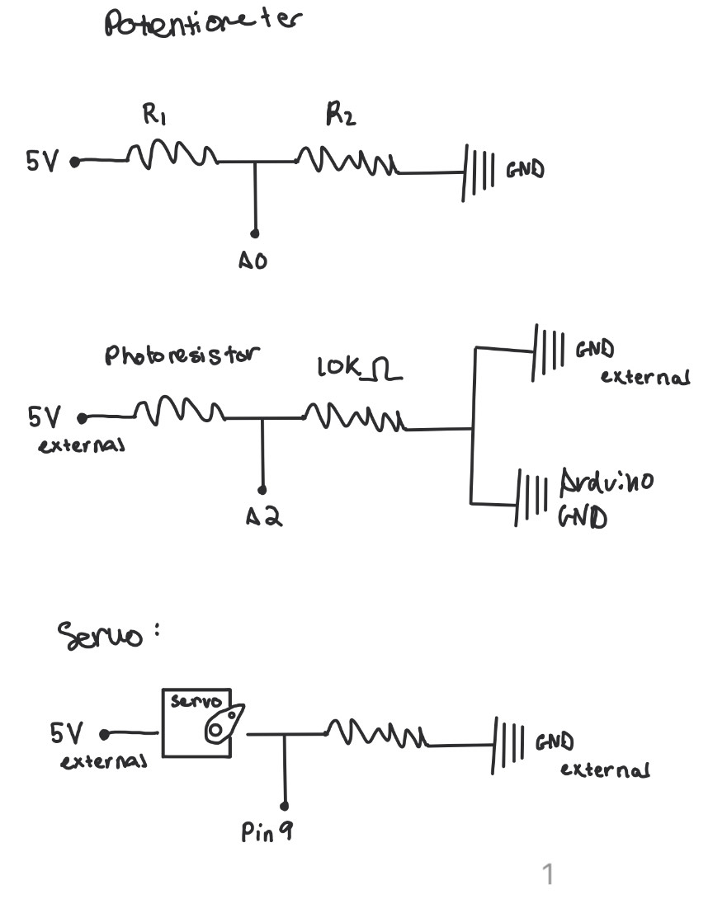
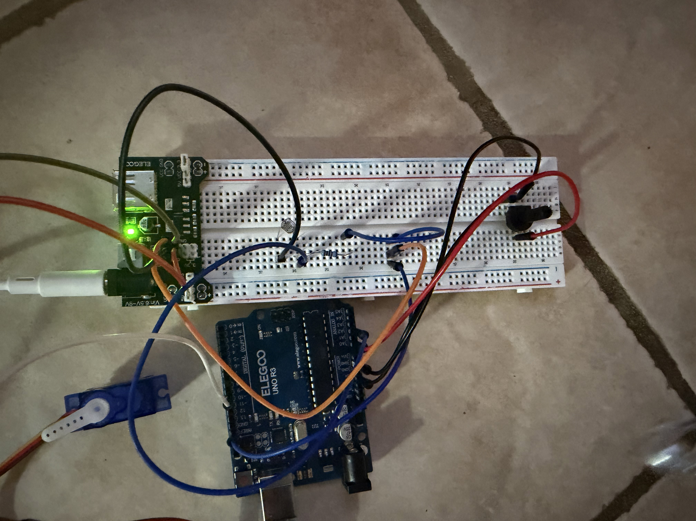
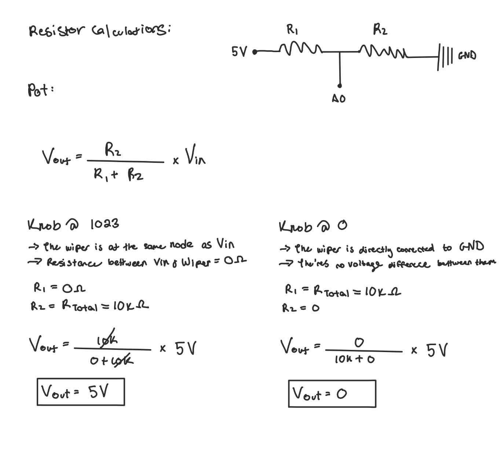
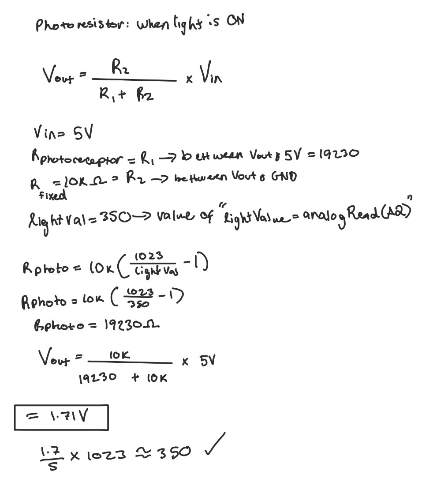
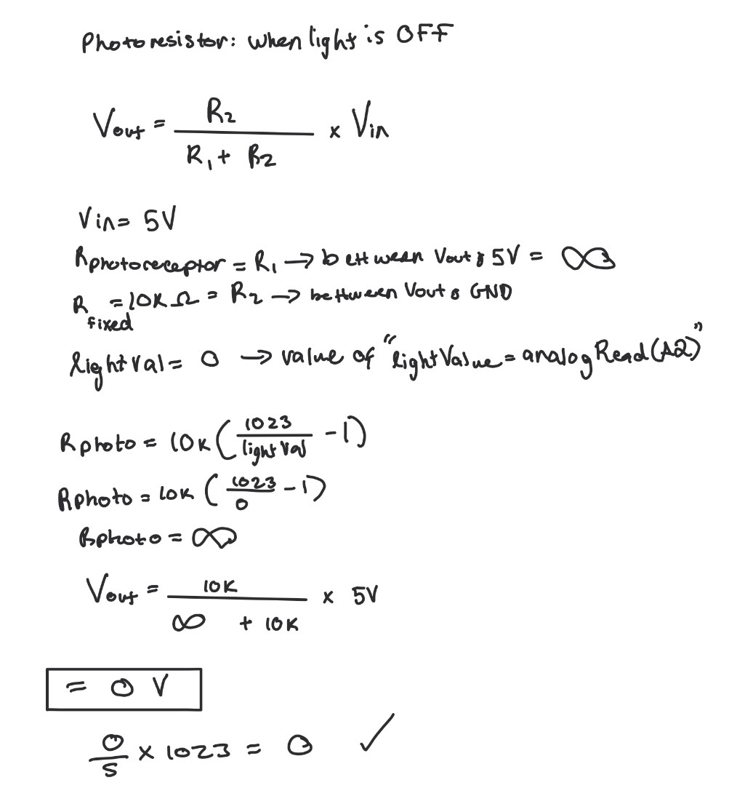
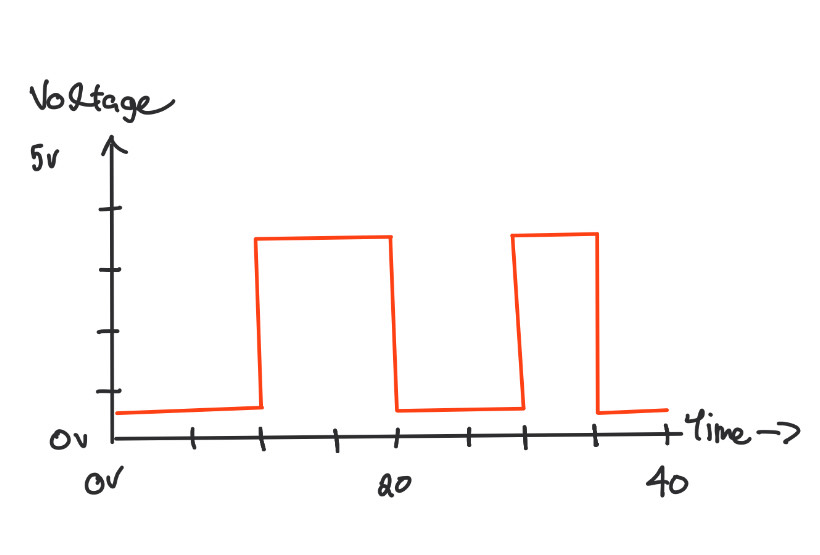

Here is all the documentation for assignment 3!
Here is all the documentation for assignment 3!
Schematics:

I chose to draws the schematics like this because I used a potentiometer,
a photoresistor connected to both external ground and the arduino ground, and a servo motor that connects to external GRND.
Circuit:

I arranged my circuit like this so that I can clearly move my potentiometer and use my photoresistor without wires getting in the way.
Ohm's Law Calculations



I chose to use a 10k fixed OHM resistor for the photoresistor because it works well for indoor room lighting.
Firmware:
/*
Valentina Filizola
Input Output! Assignment
HCDE 439
*/
// Includes the Servo library so we can control a servo
#include
// Creates myServo object
Servo myServo;
// Digital pin connected to servo
const int servoPin = 9;
// Analog pin connected to the potentiometer
const int potPin = A0;
// Analog pin connected to the photoresistor
const int photoPin = A2;
// Minimum angle the servo is allowed to move to
const int minAngle = 5;
// Maximum angle the servo is allowed to move to
const int maxAngle = 175;
// Saves the current servo angle, starting at minAngle
int angle = minAngle;
// Direction of movement: 1 = forward, -1 = backward
int stepDir = 1;
// Center reference of light level for normal room lighting
const int center = 100;
// Initializes servo and serial
void setup() {
// Starts serial communication
Serial.begin(9600);
// Connects the servo object to the servo pin
myServo.attach(servoPin);
}
// Initializes loop
void loop() {
// Reads the potentiometer value (0–1023)
int potValue = analogRead(potPin);
// Reads the photoresistor value (0–1023)
int lightValue = analogRead(photoPin);
// Maps pot value to a light sensitivity range
int span = map(potValue, 0, 1023, 80, 700);
// Calculates the lower light threshold
int low = center - span / 2;
// Calculates the upper light threshold
int high = center + span / 2;
// Keeps the lower limit within valid range
low = constrain(low, 0, 1023);
// Keeps the upper limit within valid range
high = constrain(high, 0, 1023);
// Limits light reading
int clamped = constrain(lightValue, low, high);
// Maps light to servo speed
int moveDelay = map(clamped, low, high, 120, 3);
// Prevents extreme delay values
moveDelay = constrain(moveDelay, 3, 120);
// Maps pot to servo step size
int stepSize = map(potValue, 0, 1023, 1, 10);
// Keeps step size reasonable
stepSize = constrain(stepSize, 1, 10);
// Moves the servo angle forward or backward multiplying for extra movement
angle += stepDir * stepSize;
// Checks if the servo hit the maximum angle
if (angle >= maxAngle) {
// Sets angle at the maximum
angle = maxAngle;
// Reverses direction
stepDir = -1;
// Checks if the servo hit the minimum angle
} else if (angle <= minAngle) {
// Sets angle at the minimum
angle = minAngle;
// Reverses direction
stepDir = 1;
}
// Sends the angle command to servo
myServo.write(angle);
// Prints label for potentiometer value
Serial.print("Pot=");
// Prints the potentiometer reading
Serial.print(potValue);
// Prints label for light value
Serial.print(" Light=");
// Prints the photoresistor reading
Serial.print(lightValue);
// Prints label for step size
Serial.print(" Step=");
// Prints the step size
Serial.print(stepSize);
// Prints label for delay
Serial.print(" Delay=");
// Prints the delay and moves to a new line
Serial.println(moveDelay);
// Pauses before the next movement update
delay(moveDelay);
}
Circuit's Operation
Additional questions:
In your voltage divider, can the variable resistor be either R1 or R2 or does it need to be one or the other? Justify your answer with example calculations.
Yes the variable resistor can be either R1 (top) or R2 (bottom). It doesn’t need to be one specific one.
What changes is the direction of the output voltage, which I showed in my calculations.
2: Draw a graph where the x-axis is time and the y-axis is voltage. Plot the voltage at V-measure (where your pin is reading the voltage) of your voltage divider of your shared gif/video.
